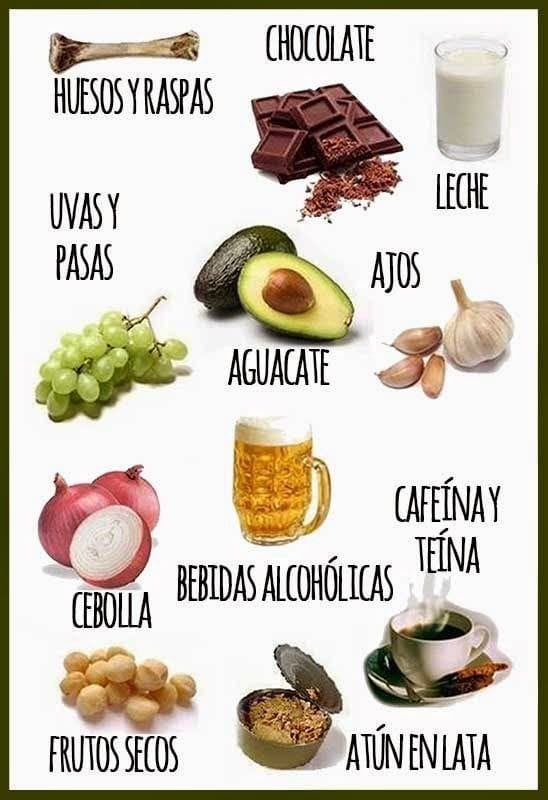

¿Cuántas veces tenemos a nuestro perro o gato bien atento, poniendo ojos de ángel, mientras comemos? Ante su mirada, puede resultar difícil resistirse a darle un trozo de nuestra comida, pero es muy importante tener en cuenta que hay alimentos que les pueden causar daños. Tenemos que cuidar la alimentación de nuestra mascota y darle comida de calidad, sin que la perjudique. Ante la duda, no le des nada o bien consúltalo con tu veterinario. Compartimos contigo una lista de alimentos prohibidos para perros y gatos:
Chocolate-cafe-te-cebolla-puerro-ajo-uvas-pasas-productos lacteos-azucar y dulces-frutos secos
